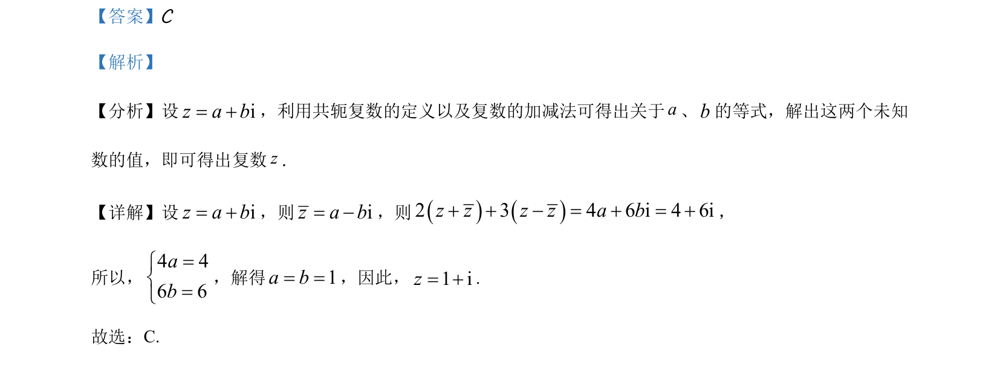

考点：复数代数形式 共轭复数 复数加减法 待定系数法
复数代数形式
共轭复数
复数加减法
待定系数法
通过设复数的代数形式，利用共轭关系与运算等式求解未知数，确定复数。

📄 原 PDF 第 1 页：素材/真题/吉林/2008-2024·（吉林）数学高考真题/2021年高考数学试卷（理）（全国乙卷）（新课标Ⅰ）（解析卷）.pdf
素材/真题/吉林/2008-2024·（吉林）数学高考真题/2021年高考数学试卷（理）（全国乙卷）（新课标Ⅰ）（解析卷）.pdf